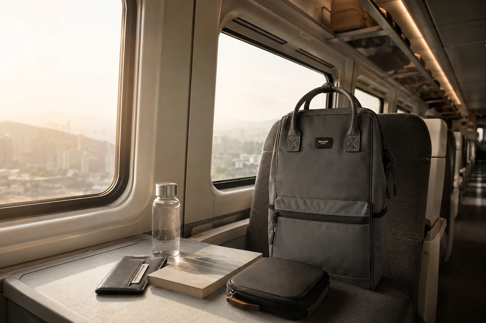

기차에서 꺼낼 물건과 도착해서 꺼낼 물건

기차에서 책 한 권을 꺼내려고 가방 전체를 다시 내리는 상황이 생길 수 있습니다. 출발할 때는 숙소에서 사용할 짐까지 한 곳에 담지만 좌석에서는 연락 도구와 짧게 읽을 자료만 필요할 때가 있습니다. 도착 전에는 충전 도구를 회수하고 다시 들고 이동할 준비를 해야 합니다. 기차 여행의 백팩은 물건의 종류만으로 나누기보다 승차와 좌석, 환승과 하차에서 어떤 묶음을 꺼낼지 생각하면 구체적으로 정리할 수 있습니다.
출발 전에는 예약한 열차의 짐 안내를 읽고 어떤 공간에서 가방을 관리할지 계획합니다. 좌석 주변에 둘 묶음과 별도 보관할 짐을 나누고 불분명한 조건은 운행사에 묻습니다. 현장에서는 직원의 안내를 따릅니다. 같은 노선을 자주 타더라도 그날 들고 가는 짐이 달라질 수 있으므로 현재 가방의 외형을 기준으로 대조합니다. 열차에서 읽을 책이 가방 깊은 곳에 있는지, 휴대전화와 확인 자료가 숙소용 파우치 아래에 들어갔는지 출발할 때 바로 볼 수 있습니다.
좌석에서 쓸 묶음의 크기
이동 중 쓸 물건을 골라 한 묶음으로 준비할 수 있습니다. 책이나 연락 도구, 안내에 따라 사용할 개인 물건을 선택하고 도착 후에만 쓸 물건과 나눕니다. 좌석에서 많은 짐을 펼치지 않도록 실제로 사용할 범위를 정하는 것입니다. 가방의 입구를 열었을 때 그 묶음만 꺼낼 수 있는지 집에서 한 번 확인하면 출발 짐과 좌석 짐의 순서가 맞는지 알 수 있습니다. 파우치를 늘리기보다 꺼낼 물건부터 고르면 됩니다.
승차권이나 예약 확인 화면은 이동 중 쓰는 물건에서도 별도 순간에 필요합니다. 역에서 먼저 확인할 자료는 찾기 쉬운 닫힌 위치에 두고 사용 뒤 돌아갈 자리를 정합니다. 화면을 보여준 뒤 휴대전화를 손에 든 채 다른 짐을 올리면 어디에 놓았는지 다시 살펴야 할 수 있습니다. 탑승을 기다리는 동안 필요한 자료를 확인하고, 이동을 시작하기 전에 손에 꺼냈던 물건을 정리하면 가방과 별도 짐의 개수가 분명해집니다.
가방을 올리거나 내릴 계획이라면 실제 짐을 담았을 때 잡는 위치를 확인합니다. 여밈이 닫혀 있는지와 길게 늘어진 끈이 다른 물건에 걸리지 않는지 봅니다. 열차에 도착해서는 안내된 공간에서 안정적으로 놓을 수 있는지 판단해야 합니다. 무리하게 높은 위치로 올리기보다 현장의 보관 안내를 확인하고 필요한 경우 직원에게 문의하세요. 좌석에서 쓸 묶음을 먼저 꺼낼 수 있다면 가방을 다시 움직이는 횟수를 줄일 수 있습니다.
Himawari No.1884 제품 정보를 여행 가방의 후보로 볼 때도 실제 이동 순서를 기준으로 검토할 수 있습니다. 평소 업무 자료를 담고 여행 물건이 추가된다면 좌석에서 꺼낼 묶음이 어디에 놓이는지 확인합니다. 같은 백팩을 출근과 여행에 쓴다면 출입 수단이나 회사 자료 가운데 이번 여행에서 필요하지 않은 것은 먼저 구분할 수 있습니다. 기차에서 쓸 개인 짐과 도착 후 짐을 나누어 담은 상태로 여닫는 동작을 살펴보면 됩니다.

환승이 있는 일정
환승이 있는 일정에서는 가방을 다시 여는 장소가 늘어납니다. 첫 열차에서 쓰던 책과 도구를 넣고 다음 승차권을 찾을 위치를 남깁니다. 낯선 역에 내린 뒤 어느 방향으로 가야 하는지 휴대전화로 볼 계획이라면, 이미 그 위치를 알고 있어야 합니다. 큰 가방과 별도 짐을 들고 걷는 중에 다시 배치를 바꾸기보다 내리기 전에 정리할 수 있습니다. 실제 환승 경로는 운행사와 현장 안내를 읽고, 가방에서는 그 경로를 확인할 자료와 이동할 손을 어떻게 남길지 생각합니다.
환승 중 간식이나 새 안내물을 받았다면 짐의 개수가 달라집니다. 필요한 물건을 꺼내려다 새 포장까지 함께 움직이지 않도록 임시로 넣을 위치를 봅니다. 종이와 용기가 함께 있으면 실제 닿는 면과 용기의 닫힘을 확인하세요. 가방을 내려놓고 정리할 필요가 있다면 사람의 이동을 방해하지 않는 위치를 선택합니다. 환승을 짧게 만드는 목표보다 현재 물건을 확인한 채 다음 구간으로 이어가는 동작이 필요합니다.
좌석에 앉아 충전 도구를 연결했다면 정리할 때 확인할 장소가 하나 더 생깁니다. 가방 안에 기기를 넣기 전에 사용한 케이블과 어댑터를 회수하고, 좌석 주변에 놓은 작은 물건을 함께 봅니다. 이용 가능한 설비와 사용 방법은 해당 열차 안내를 따릅니다. 열차에서 어떤 설비를 반드시 제공한다고 생각해 짐을 고르지 않고, 실제로 사용할 계획인 도구와 꺼냈던 물건을 구분하면 됩니다.
내리기 전에 돌아올 물건
도착 안내와 실제 일정에 맞춰 꺼낸 물건을 차례로 정리합니다. 먼저 읽던 자료를 닫고 충전 도구와 개인 소품을 원래 묶음으로 돌려놓습니다. 연락 도구와 다음 이동에 사용할 확인 자료는 계속 찾을 위치에 남길 수 있습니다. 마지막에 백팩을 집었다고 정리가 끝났다고 생각하지 않고 좌석과 주변 면, 짐을 두었던 공간을 살펴보세요. 함께 들고 온 다른 가방이나 겉옷이 있었다면 그 개수도 확인합니다.
출입문으로 이동할 때는 백팩의 여밈을 닫고 끈이 주변에 걸리지 않는 상태인지 봅니다. 좁은 통로에서는 사람의 흐름과 가방이 차지하는 공간을 함께 살핍니다. 내린 뒤 바로 다음 교통편을 이용한다면 필요한 자료를 큰 짐 깊은 곳으로 옮기지 않고 찾을 위치를 유지할 수 있습니다. 도착 장소에서 가방을 다시 꾸릴 계획이라면 통로에서 급히 바꾸기보다 정리할 수 있는 자리로 옮겨 필요한 묶음만 조정하면 됩니다.
여행지에 도착해 가방을 열면 기차에서 쓰던 물건과 숙소에서 쓸 물건의 순서가 달라집니다. 이동용 묶음을 정리하고 다음 외출에서 필요한 것만 남겨둘 수 있습니다. 돌아오는 열차도 같은 좌석 조건일 거라 생각하지 않고 실제 예약 안내를 다시 확인합니다. 기차 안에서 무엇을 꺼냈는지와 내리기 전에 어디를 확인했는지가 기록으로 남으면, 다음 이동에서도 좌석용 묶음과 회수할 장소를 구체적으로 정하기 쉽습니다.